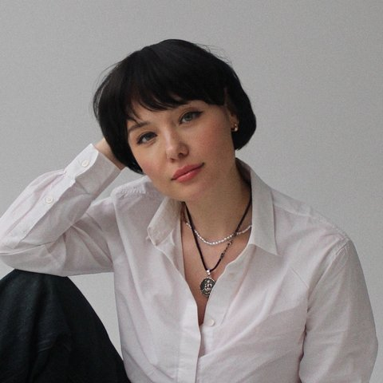
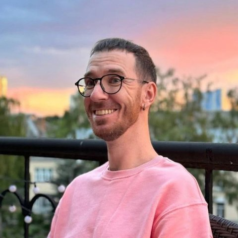

Запрошуємо доєднатись до телеграм каналу подкасту, де будуть доступні тести та вправи на тематику подкасту, анонси онлайн зустрічей спільноти, а також можливість поспілкуватись в чаті: t.me/bamanawom
Ведучі

Наталія Дороган
Медичний психолог
Медичний психолог. 11 років у консультуванні та психотерапії, спеціалізація — групова психотерапія. Найбільше працюю з темами: тривожний розлад, співзалежні стосунки, емоційне вигоряння. Маю регулярну особисту терапію та супервізію.
Підпишись на Наталію →
Євген Кочубей
Клінічний психолог
Клінічний психолог, практикую в гештальт підході, ведучий груп і тренінгів. Спеціалізація: робота із співзалежними стосунками. Завершений курс «Екологічне ведення груп в гештальт-підході».
Підпишись на Євгена →Епізоди
Сезон 1

Стосунки в умовах хронічного стресу
Як війна змінює стосунки? У цьому випуску говоримо про вплив хронічного стресу на пару, конфлікти, прив'язаність, сексуальність, тривогу та способи зберегти емоційну близькість навіть під час війни. Практичні поради психологів для підтримки здорових стосунків у складні часи.

Жіночий аб'юз, про який соромно говорити
Чи можуть жінки бути аб'юзерками? Чому про чоловіків, які зазнають психологічного насильства, майже не говорять? У цьому випуску говоримо про жіночий аб'юз, емоційне насильство, газлайтинг, маніпуляції, ігнорування та знецінення. Розбираємо, чому чоловіки часто мовчать про такий досвід, як розпізнати токсичні стосунки та чому аб'юз не має статі.

«Попаламщики» чи «утриманки»: де межа норми?
Хто має платити на першому побаченні? Чи повинні партнери ділити витрати 50/50? І чи вбиває фінансове питання романтику у стосунках? У цьому випуску говоримо про гроші в парі, фінансову рівність, утриманство, партнерство та те, чому конфлікти через фінанси часто руйнують стосунки.

Як вийти з токсичних стосунків у здорові?
Ми йдемо в стосунки і будуємо близькість тими способами, яких нас навчили. Часто це несвідомі процеси. Страх втрати, ігнорування своїх потреб... і багато іншого, що затягує нас в тенета токсичності. Говоримо у випуску про те, що може допомогти перетворити токсичність стосунків на підгрунтя для діалогу і близькості.

Чому люди роками залишаються в токсичних стосунках
Середньостатистична людина повертається до токсичного партнера сім разів, перш ніж піти остаточно. У новому випуску подкасту «Між чоловіком і жінкою» говоримо, чому так. І це не про слабкість характеру. Це про хімію мозку, дитячі травми і пастку прив'язаності, яку складно побачити зсередини.

Чому успішні жінки залишаються самі?
«Я все можу сама» — як незалежність руйнує близькість. Чому чоловіки не витримують сильних жінок. Конкуренція у парі замість любові. Страх близькості, контрзалежність, самооцінка. Як будувати здорові стосунки без боротьби — випуск про реальні причини самотності успішних жінок.

Чи бояться чоловіки сильних жінок?
Чи справді чоловіки бояться сильних жінок — чи це лише міф, який приховує глибші процеси у стосунках? У цьому випуску досліджуємо, як сила, незалежність і впевненість жінки впливають на динаміку в парі, та чому реакція чоловіків може бути такою різною. Говоримо про самооцінку, страх близькості, типи прив'язаності.

Чому ти мене не чуєш?
Чому партнер мене не чує? Говоримо про конфлікти у стосунках, нерозуміння в парі та відчуття, що тебе не чують: чому виникають проблеми в комунікації, як чоловіки і жінки по-різному сприймають слова, що заважає нам почути одне одного і як говорити так, щоб вас розуміли.

Що таке «здорові стосунки»?
Що насправді означають здорові стосунки у парі? Чи правда, що у хороших стосунках люди ніколи не сваряться? Говоримо про популярні міфи, реальні критерії психологічно зрілої пари, поведінкові патерни, які руйнують стосунки, і що допомагає парам зберігати близькість і повагу.

Хочу побудувати стосунки, але не виходить
Якщо ти уникаєш стосунків, або твої стосунки швидко закінчуються, або ти просто відчуваєш відчай в даній темі — цей випуск для тебе. Говоримо про пошук відповіді «для чого мені стосунки», страх близькості, негативний попередній досвід і неможливість пред'являтися в стосунках собою справжнім.

Як пережити розставання і не втратити себе?
Говоримо про біль після розриву, емоційну залежність, прив'язаність, депресію та тривогу після розставання: як відпустити людину, чому важко розірвати токсичні стосунки, як перестати думати про колишнього, які стратегії допомагають пережити розрив і скільки триває відновлення.

Онлайн-знайомства: ринок людей чи шанс для знайомства?
Tinder, Badoo, Bumble, українські дейтинг-додатки — як змінилася культура знайомств? Говоримо про те, чому онлайн-знайомства викликають суперечки: де межа між алгоритмом і емоціями, вибором і об'єктивацією, маркетингом і справжніми почуттями. Слухай, якщо шукаєш глибину за межами свайпу.

Немає часу для близькості
«Зараз не на часі», «ось закінчимо ремонт, тоді будемо ходити на побачення» — ці аргументи часто стають перепоною на шляху до емоційної близькості. Досліджуємо, як сучасний темп життя і хронічний стрес поступово віддаляють партнерів одне від одного, і що реально допомагає повертати контакт.

Хочу піти, але не можу
Чому ми залишаємося у стосунках, які давно не приносять радості? Досліджуємо, що насправді стоїть за внутрішньою неможливістю розірвати стосунки: емоційну залежність, страх самотності, співзалежність, дитячі травми, почуття провини та соціальний тиск, а також як безпечно підготуватися до розриву.

Кохання живе три роки?
Розмова про один із найпоширеніших і найсуперечливіших міфів про стосунки: чому багато людей переконані, що любов має термін придатності. Говоримо про психологію кохання, біохімію прив'язаності та про те, чому фаза закоханості — це лише біологічний старт, а не сама любов.

Хто за що платить у стосунках
Хто у парі має платити за вечерю, комуналку і подорожі? Чесна розмова про гроші, владу, любов і справедливість у стосунках: сімейні сценарії, моделі бюджету і грошові характери, які формуються ще в дитинстві, та як домовлятись про витрати так, щоб ніхто не почувався винним.
Сезон 2
Другий сезон подкасту «Між чоловіком і жінкою» готується. Слідкуйте за анонсами в телеграм-каналі.